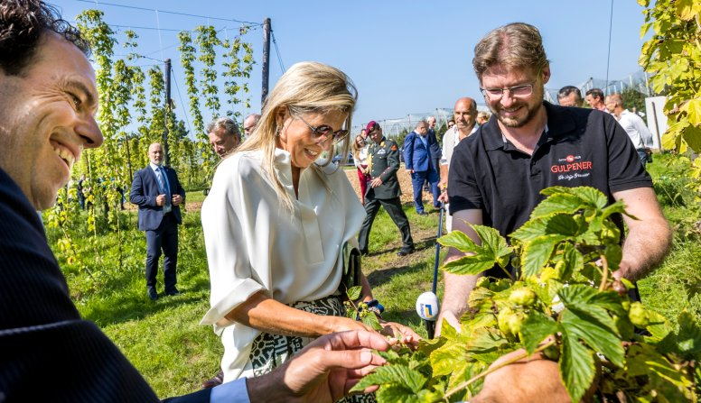

Journey through 5 culinary destinations
From historic markets to state-of-the-art urban farms, Dutch cities seamlessly merge tradition and innovation and are the ideal locations to start your food journey. They not only offer delicious culinary options but also provide a glimpse of a future where city and nature are closely linked. We'll guide you along five special, unmissable destinations on your gastronomic journey of discovery.
- Visit the best vegetable restaurant in the Netherlands.
- Enjoy haute cuisine in a hot-air balloon.
- Quench your thirst at Europe's most sustainable brewery.
From farm to fork in the Achterhoek region

Head out of the city and easily continue your journey towards the Achterhoek, where you will find Het Keunenhuis surrounded by nature in Winterswijk. Top chef Nel Schellekens has been cooking according to the "0% waste, 100% taste" principle for 25 years. The entire animal or plant is used: from head to tail and from peel to kernel. Ingredients are sourced directly from the estate or from local farmers, allowing Schellekens to demonstrate how circular cooking works in practice.
Sample sustainable organic cheese in Gelderland
The route takes you further into the province of Gelderland, where Remeker produces organic cheese with global acclaim. Farmer Jan Dirk van de Voort and his son Peter process milk from Jersey cows that graze outside day and night and receive exclusively organic feed. This results in a unique, richly flavoured cheese. Visit the farm in Ede where you can buy cheese and even treat yourself to coffee or ice cream made from their own milk.
"We try to work in concert with nature without controlling it. It's what we call natural sustainability," says Van de Voort. Every bite is a testament to this philosophy. The historic farmhouse with its terrace and playground is a great stopover for cyclists and hikers.
Plant-based fine dining in Brabant
In the village of Bavel near Breda is Vannu, a 100% vegan fine dining restaurant. Chefs Iris Saaman and Gijs Kemmeren opened it in 2023 and soon received a green Michelin star. "Creating delicious Dutch food is hugely important to us," says Kemmeren.
The chefs work with local grains and potatoes as much as possible and are particularly well-known for their innovative dry-aged beetroot, in which beets are aged in a similar way to meat. This results in a unique flavour and texture. Their dishes prove that plant-based food can be sustainable and gastronomically exciting.
Beer in harmony with nature
Travel further south to Gulpen in Limburg, where Gulpener has been brewing beer since 1825. It's now the most sustainable brewery in Europe, where brewers work closely with farmers in the region, use local grain and hops, and draw water from their own well. This results in beers made completely in harmony with nature.
Take a tour to learn all about the sustainable process. Relax in the café (with a beer garden, of course!) and enjoy dishes made with ingredients originating from within a 40-kilometre radius. A particular highlight is HopFest, the annual hop picking festival held in September.

Finishing above the clouds

Finish your trip with something truly special. Step aboard the CuliAir hot air balloon, the world's only haute cuisine sky dining restaurant. Master chef Angélique Schmeinck prepares a five-course menu using the heat of the balloon burners. Float over the beautiful Dutch landscape while enjoying dishes that literally reach great heights.
Schmeinck says: "It's difficult to put into words. No matter how many videos you watch beforehand, you'll still be gobsmacked when you suddenly feel the momentum with which the balloon takes off and breaks through the clouds. CuliAir never disappoints." The experience concludes with a glass of champagne once the balloon has landed safely back on terra firma.